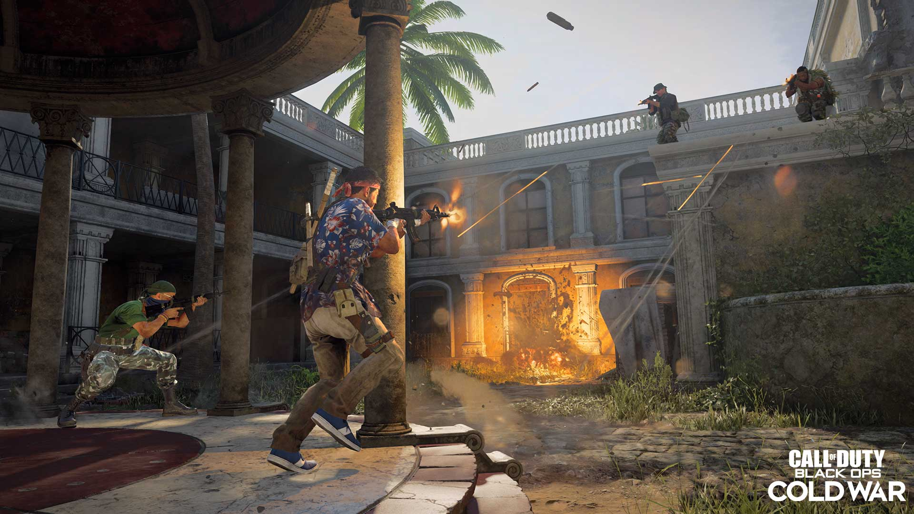
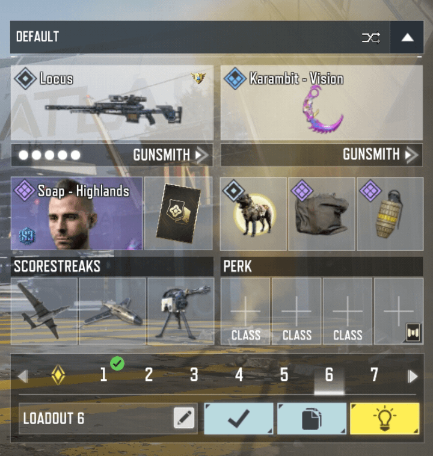

Welcome to Call of Duty™ Pro Tips by MOONY™. Improve your stealth skills and overall gameplay with our Pro Tips and Premium Package. Take your COD experience to the next level with tips you never knew could influence your gameplay. Start now!
1. COMBAT MECHANICS
• To counter slide fatigue, mix your movements with jumps, short runs, or strafes instead of spamming slides.
• Use elevated positions and head glitches whenever possible.
• Use a zig-zag strafing movement at close range to throw off enemy aim.
2. GUNFIGHT DISCIPLINE
• Never force a fight you're not equipped for. Only engage when you have the advantage in areas such as positioning or cover.
• Pre-aim at head or chest level around common angles and keep your crosshair ready. Having the first-shot advantage can win most fights.
• Do not shoot on sight if the enemy is about to reach cover. Wait for a good opportunity to land a headshot or deal damage.

3.MOVEMENT COMBOS
•Dropshot Trapping: Tap the prone button during a fight to instantly shrink your hitbox below your enemy crosshairs.
•Slide-Hop Chains: Link your slides directly into your jumps to maintain your maximum velocity across free areas.
•Flinch Mitigation: Pair maneuvers with the toughness perk to keep your screen steady.
4. GUNSMITH OPTIMIZATION
• BSA Stability: Balance your weapon build properly to maintain tight Bullet Spread Accuracy.
• Recoil Memorization: Practice in the firing range to learn the vertical recoil patterns of meta weapons.
• ADS Snapping: Stack attachments that mainly reduce aim-down-sights time for faster target acquisition.

EXTRA PRO TIPS
• Pre-aim at common corners before moving around them to get the first shot off.
• Slide down slopes in Battle Royale to gain a massive speed boost.
• Enable "Sync ADS FOV" to minimize your weapon's visual recoil.
• Call of Duty is a game that requires investment, so the more you invest, the more you can progress. NOTE: Invest wisely!
You need more PRO Tips?🔥
•Sign up for MOONIFY™ today!
•Experience Live lessons from our specialists around the world!